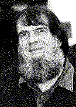

|
 |
ACM Fellow Profile
horning@intertrust.com,
horning@acm.org |
 |
Please elaborate on the work leading up to your achieving the distinction of ACM Fellow:
I wrote my first computer program in 1959, and joined ACM in 1965. After getting my Ph.D. in
CS at Stanford in 1969, I spent 8 years at the University of Toronto as a founding member of the
Computer Systems Research Group (now Institute). I spent nearly 20 years at two of the great
computing research centers: Xerox PARC CSL and DEC/SRC. I am now Director of the Strategic
Technologies and Architectural Research Laboratory (STAR Lab,
http://www.intertrust.com/star/)
at InterTrust Technologies Corporation.
I am probably best known for my work in programming methodology and formal methods, which culminated in joint work with John Guttag and others on the Larch family of formal specification languages, and a methodology for their use.
I have also done considerable work in the area of language design, and was a principal in the design of four systems programming languages: Cedar/Mesa, at PARC; Euclid, sponsored by ARPA; the Project SUE System Language at Toronto; and XPL at Stanford. I consulted on the design of other languages, including Ada, Modula-3, and Modula-2+.
I helped to develop a number of parsing and compiler-generation tools, including the first practical implementation of an LALR(1) parser. I was a principal in the design of a fault-tolerant programming mechanism, the "recovery block," and an efficient implementation, the "recursive cache."
I have also been active in the ACM for many years, as a member, referee, CACM department editor, program committee editor and chairman, ad hoc committee member, and currently as a member of both CCPP (the Committee on Computers and Public Policy) and of USACM-EC (the executive committee of the US public policy committee).
What is the best reference to your work (book or paper, full citation)?
Larch: Languages and Tools for Formal Specification
John V. Guttag and James J. Horning, et al.
Springer-Verlag, 1993, ISBN 0-387-94006-5
http://www.amazon.com/exec/obidos/ISBN=3D0387940065/
A Compiler Generator
William M. McKeeman, James J. Horning, and David B. Wortman
Prentice-Hall, 1970, ISBN 13-155077-2
What are your current research interests?
Languages for electronic contracts; software tamper-resistance.
What are your current outside interests?
Home video, West Highland White Terriers, fuchsia photography, science fiction.
What was the greatest influence on you?
I was hooked from the start by computers: The potential of absolute control, and the excruciating
difficulty achieving what you intend when you are obeyed unquestioningly.
I have been privileged to work with numerous wise men, notably Bill McKeeman, Brian Randell, Tom Hull, Bob Taylor, and John Guttag.
What was your greatest influence?
I advised a wonderful group of graduate students at Toronto (John Guttag, John Gannon, Jim
Donahue, Larry Weissman, Michael Wharton for the Ph.D., plus 8 for the M.Sc.), who in turn have
advised an ever-growing tree of students.
Who do you think has made the greatest impact on software engineering?
That's really hard to say. Do you mean "software engineering" as an aspiration, Software
Engineering as a nascent engineering discipline, or the work on program development that has
flown the flag of "Software Engineering" for the past 30 years?
For the first, perhaps Tony Hoare. For the second, maybe Dave Parnas. For the third, probably Harlan Mills.
What's your favorite story about software engineering or development?
Don't get me started! There are so many... Back in the days when writing an efficient integer binary-to-decimal conversion routine was a
substantial task (for the Bendix G-15D), one of my friends found that Bendix's routine did not
always produce the correct answer. He analyzed the problem, and and after many hours of hard
labor produced a new routine that was in all ways at least as efficient, and should always produce
the exact answer. Just to be on the safe side, he produced a test harness that counted in binary and
in BCD, converting each binary number to decimal and comparing. For weeks, this was the
background task on the college's computer, and he was not satisfied until it had counted through the
entire range from 0 to 10^7 - 1 (the routine produced 7-digit output) before proudly submitting the
improved routine to Bendix. Shortly after Bendix distributed the new routine to users, he got a
telephone call: "Do you realize that your routine drops the sign on negative numbers?" The most
exhaustive test of a routine I've ever seen, and he forgot to cover half the domain!
Which computer-related areas are most in need of investment by government,
business or education?
Mathematics and communication skills.
What advice do you have for computer science/software engineering students?
You can always learn the latest language or system on the job (and you should). While you have
the chance, study things that will still be relevant in a decade: mathematics, design, composition
and rhetoric.
Remember Dijkstra's profound dictum: The true subject matter of programming is not programs, but the families of computations that they evoke.
Go back and read the 1968 NATO report on SOFTWARE ENGINEERING (reprinted by Petrocelli/Charter in 1976, ISBN 0-88405-334-2; now out of print, but should be in any good technical library). Then ask yourself "What has changed, except for the scale of the problems that our tools aren't yet good enough to solve?" Our ambitions have grown more rapidly than our technology or the scope of our discipline.
What is the most often-overlooked risk in software engineering?
#1 That the environment will do something the designer never anticipated.
Corollary: Separately-designed subsystems will interact in ways that their designers didn't plan
for.
What is the most-repeated mistake in software engineering?
Trying to include more complexity than a single person can carry in his/her head.
What are the most exciting/promising software engineering ideas or techniques on the horizon?
Greg Nelson's Extended Static Checking.
Please give us any additional comments for the profile:
I'm not sure the years have yet taught me wisdom, but they've made me realize that:
- Nothing is as simple as we hope it will be.
- Few customers would be willing to pay for perfect software, even if we knew how to develop it.
- Society at large has proven amazingly resilient to failure-in-the-small of computer based systems -- but I am still frightened by the degree to which our systems are being linked in ways that not only introduce failures, but make it more likely that failures will propagate.
Thank you!
Profiled by Arnulf Mester, mester@acm.org